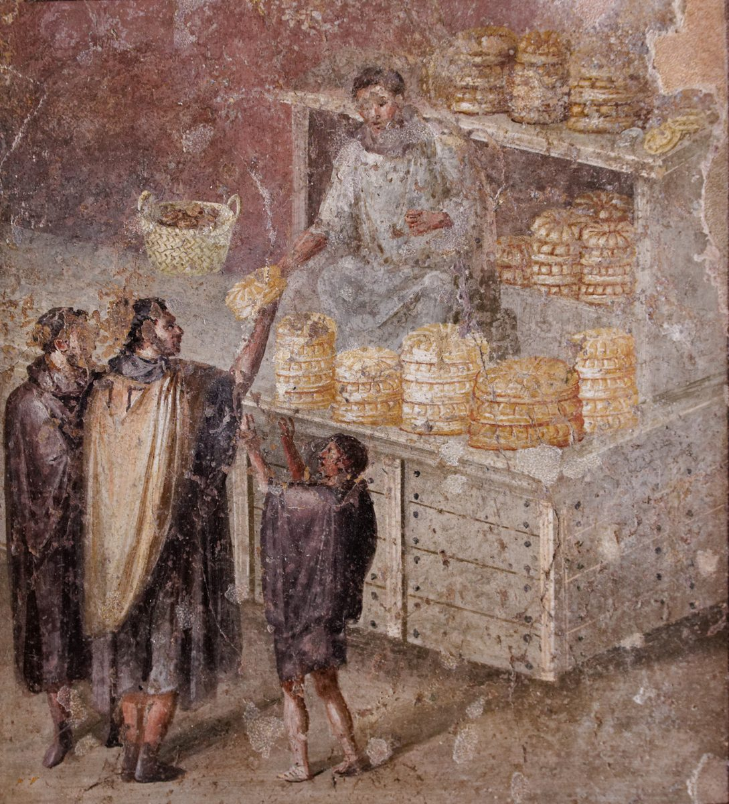

2 Thessalonians 3 — The Mister Translation

⚠ Long called a sale of bread, the scene may instead show a candidate or an official in a white toga handing bread out free; either way, bread changes hands across a counter in a Roman town. ‘Nor did we eat anyone’s bread without paying’ (verse 8).

Translator’s Notes
“Finally, brothers, pray for us, that the word of the Lord may run and be glorified.” “Finally” is to loipon, as at 1 Thessalonians 4:1. The word “runs” as in the psalm, “his word runneth very swiftly,” at Psalm 147:15. “The word of the Lord” is the phrase of 1 Thessalonians 1:8, “from you the word of the Lord has rung out”; the Greek reads kyrios, and the translation keeps “Lord,” as there. The NWT 1984 reads “that the word of Jehovah may keep moving speedily”; the KJV reads “that the word of the Lord may have free course”; the ASV reads “that the word of the Lord may run and be glorified”; the Douay reads “that the word of God may run,” after the Vulgate’s sermo Dei.
“Rescued from perverse and evil people; for not all have faith.” Atopos, “perverse,” is literally “out of place,” and stands in four verses: the thief’s “this man has done nothing out of place” at Luke 23:41, Festus’s court at Acts 25:5, the islanders watching “nothing out of place happen” to Paul at Acts 28:6, and this one (dictionary). The KJV reads “unreasonable and wicked men,” the Douay “importunate and evil men,” and the NWT 1984 “harmful and wicked men.” “Not all have faith” has the article, hē pistis, and the next verse answers it with the same root: not all have faith, “but the Lord is faithful.” The NWT 1984 reads “faith is not a possession of all people”; the TLB reads “not everyone loves the Lord.”
“But the Lord is faithful, who will strengthen you and guard you from the evil one.” The first letter ended on the same note, “Faithful is the one who calls you,” at 1 Thessalonians 5:24. “Strengthen” answers the prayer of 2 Thessalonians 2:17, “strengthen them in every good work and word” (dictionary). The Vulgate reads Deus, and so the Douay: “But God is faithful.” Tou ponērou can be masculine, “the evil one,” or neuter, “evil,” as in the prayer of Matthew 6:13, “rescue us from the evil one”: the ASV and NIV read “the evil one,” the NWT 1984 “keep YOU from the wicked one,” and the KJV “keep you from evil.”
“May the Lord guide your hearts into the love of God and into the endurance of Christ.” “Guide” is kateuthynō, the verb of 1 Thessalonians 3:11, “guide our way to you” (dictionary). ⚠ Both phrases can be read two ways: “the love of God” as God’s love for them or their love for God, and “the endurance of Christ” as Christ’s own endurance or the endurance with which they wait for him (dictionary). The translation keeps both open. The KJV reads “into the patient waiting for Christ”; the ASV reads “into the patience of Christ”; the NWT 1984 reads “into the endurance for the Christ”; the NIV reads “into God’s love and Christ’s perseverance.”
“To keep away from every brother who walks in a disorderly way and not according to the tradition that they received from us.” “In a disorderly way” is ataktōs, the adverb of the “disorderly” of 1 Thessalonians 5:14, whom the first letter told the readers to admonish (dictionary); the NIV reads “every believer who is idle and disruptive,” the KJV and ASV “every brother that walketh disorderly.” “The tradition” is the paradosis of 2 Thessalonians 2:15 (dictionary). ⚠ The pronoun divides the editions three ways: Nestle–Aland prints “they received,” Westcott and Hort “you received,” and the Byzantine text “he received.” Each has its shelf witness: the ASV reads “which they received of us,” the NWT 1984 “the tradition YOU received from us,” and the KJV “which he received of us.”
“How you ought to imitate us… nor did we eat anyone’s bread without paying.” “Imitate” is the verb of the “imitators of us and of the Lord” at 1 Thessalonians 1:6 (dictionary). “Without paying” is dōrean, as at Matthew 10:8, “You received without paying; give without pay,” and at 2 Corinthians 11:7, where Paul preached “free of charge” (dictionary). Mochthos, “hardship,” stands in three verses, each time paired with kopos, “labor”: 2 Corinthians 11:27, 1 Thessalonians 2:9 and this one (dictionary). The sentence repeats 1 Thessalonians 2:9 almost word for word, “working night and day so as not to be a burden to any of you.” Acts makes Paul a tentmaker by trade at Acts 18:3, and has him say “these hands ministered to my needs” at Acts 20:34.
“Not because we do not have the right, but to give ourselves to you as a pattern to imitate.” “The right” is exousia, as in Paul’s “Do we not have the right to eat and drink?” at 1 Corinthians 9:4 and “we have not used this right” at 1 Corinthians 9:12 (dictionary). “Pattern” is typos, what the readers themselves became “to all who believe in Macedonia and in Achaia” at 1 Thessalonians 1:7 (dictionary). The KJV reads “Not because we have not power”; the ASV reads “not because we have not the right”; the NIV reads “not because we do not have the right to such help.”
“If anyone is not willing to work, neither let him eat.” “Used to give you this command” is the imperfect: the rule was taught while the missionaries were in Thessalonica. The rule turns on ou thelei, “is not willing.” It concerns members of a congregation who could work and would not, and it is followed at once by “do not lose heart in doing good”; it says nothing about those who cannot work. The KJV reads “if any would not work, neither should he eat”; the NIV reads “The one who is unwilling to work shall not eat”; the TLB reads “He who does not work shall not eat,” and drops the willing.
How the rule has been used. ⚠ The sentence has had a long life outside the congregation it was written for. John Smith imposed it on the colonists at Jamestown in 1609. Lenin took it up as a principle of socialism, and the Soviet Constitution of 1936, in its Article 12, wrote: “He who does not work, neither shall he eat.” Those uses drop the word the verse turns on, “willing,” and turn a rule for a household of believers who shared their meals into a rule for a state. The verse itself is narrower: it names those who refuse work, inside a community that was feeding them.
“Walking in a disorderly way, not busy at work but busybodies.” The Greek is a pun: mēden ergazomenous alla periergazomenous, “working at nothing but working around.” Periergazomai stands in one verse of the New Testament (dictionary); its adjective, periergos, is the “curious arts” whose books are burned at Acts 19:19 (dictionary). The KJV reads “working not at all, but are busybodies”; the NIV reads “They are not busy; they are busybodies”; the Douay reads “working not at all, but curiously meddling.”
“To work quietly and eat their own bread.” “Quietly” is meta hēsychias, “with quietness” (dictionary); the first letter asked the readers “to live quietly, and to attend to your own affairs, and to work with your hands” at 1 Thessalonians 4:11. “Their own bread” answers “anyone’s bread” in verse 8. The KJV reads “that with quietness they work, and eat their own bread”; the NIV reads “to settle down and earn the food they eat.”
“But you, brothers, do not lose heart in doing good.” “Lose heart” is enkakeō, as at Galatians 6:9, “let us not lose heart in doing what is good,” and in the parable “always to pray and not lose heart” at Luke 18:1 (dictionary). Kalopoieō, “doing good,” stands in one verse of the New Testament (dictionary). The KJV reads “be not weary in well doing”; the NWT 1984 reads “do not give up in doing right.”
“Take note of that person; do not mix in company with him, so that he may be ashamed.” Sēmeioō, “take note,” to mark someone, stands in one verse of the New Testament (dictionary); its noun is the “sign” of verse 17. Synanamignymi, “mix in company with,” stands in three verses: 1 Corinthians 5:9 and 1 Corinthians 5:11, and this one (dictionary). “Ashamed” is entrepō, the verb of 1 Corinthians 4:14, “I am not writing this to shame you.” The KJV reads “note that man, and have no company with him, that he may be ashamed”; the NWT 1984 reads “keep this one marked, stop associating with him.”
“Yet do not regard him as an enemy, but admonish him as a brother.” The limit is in the text itself. The one marked stays “a brother,” and the word is “admonish,” noutheteō, the verb of “admonish the disorderly” at 1 Thessalonians 5:14. It is a different instruction from Jesus’ last step at Matthew 18:17, “let him be to you as the Gentile and the tax collector.” The KJV reads “Yet count him not as an enemy, but admonish him as a brother”; the NIV reads “warn them as you would a fellow believer.”
“Now may the Lord of peace himself give you peace at all times in every way.” “The Lord of peace” stands in one verse of the New Testament; elsewhere it is “the God of peace,” as at 1 Thessalonians 5:23 and Romans 15:33. “Give you peace” is the close of the priestly blessing at Numbers 6:26, “and give you peace,” and the Greek of Numbers has the same verb in the same form, dōē… eirēnēn. The Vulgate reads in omni loco, “in every place,” and so the Douay, “everlasting peace in every place,” reflecting topō, “place,” for tropō, “way.” The KJV reads “give you peace always by all means”; the NWT 1984 reads “give YOU peace constantly in every way.”
“The greeting is in my own hand, Paul’s, which is a sign in every letter; this is how I write.” “In my own hand” stands in five verses, all at the end of a letter: 1 Corinthians 16:21, Galatians 6:11, Colossians 4:18, Philemon 1:19, and this one. The words imply that another hand wrote what came before, as Tertius, “who wrote this letter,” does at Romans 16:22, and that Paul took the pen for the last lines. ⚠ “A sign in every letter” answers “a letter as though from us” at 2 Thessalonians 2:2. Readers who hold that Paul wrote it hear his guard against forgery; those who hold, with Wrede, that the letter came later in his name hear a writer insisting on the signature, and note that Romans, 2 Corinthians, Philippians and 1 Thessalonians say nothing of one. This page sets out both and does not choose. The KJV reads “which is the token in every epistle: so I write”; the NIV reads “which is the distinguishing mark in all my letters.”
“The grace of our Lord Jesus Christ be with you all.” The first letter ended “be with you” at 1 Thessalonians 5:28; this one says “with you all,” as verse 16 says “The Lord be with you all.” ⚠ Later copies add a closing note, which the Textus Receptus prints, that this letter too was written from Athens, and the Geneva ends “The second Epistle to the Thessalonians, written from Athens.” The note is not part of the letter. The Byzantine text also adds “Amen,” which the KJV and Douay print; the ASV, NIV and NWT 1984 end without it.
Patterns worth carrying forward
Where this translation keeps the exact words: “the word of the Lord,” as at 1 Thessalonians 1:8; “run,” as in Psalm 147:15; “faith” and “faithful,” one root; “the evil one,” as at Matthew 6:13; “guide,” as at 1 Thessalonians 3:11; “disorderly,” as at 1 Thessalonians 5:14; “the tradition,” as at 2:15; “imitate,” as at 1 Thessalonians 1:6; “without paying,” as at Matthew 10:8; “labor and hardship,” as at 1 Thessalonians 2:9; “the right,” as at 1 Corinthians 9:4; “pattern,” as at 1 Thessalonians 1:7; “not willing,” never dropped; “busybodies” for the pun; “lose heart,” as at Galatians 6:9; “mix in company with,” as at 1 Corinthians 5:9; “admonish,” as at 1 Thessalonians 5:14; and “in my own hand,” as at Colossians 4:18.
Echoes paid. “Strengthen” from the prayer of 2 Thessalonians 2:17; the tradition of 2 Thessalonians 2:15; a letter as though from us, at 2 Thessalonians 2:2, answered by the signature; the disorderly of 1 Thessalonians 5:14; work with your hands and live quietly from 1 Thessalonians 4:11; labor and hardship, night and day, from 1 Thessalonians 2:9; the imitators and the pattern of 1 Thessalonians 1:6–7; the God of peace of 1 Thessalonians 5:23, now the Lord of peace; and faithful from 1 Thessalonians 5:24.
Echoes planted. The word for quiet returns in the prayer for a quiet life at 1 Timothy 2:2, and the busybody, as the adjective periergos, at 1 Timothy 5:13 (both yet to come in this translation).
This is the last chapter of 2 Thessalonians. The next letter is 1 Timothy 1, already on these pages.